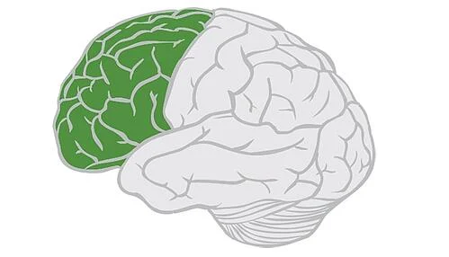
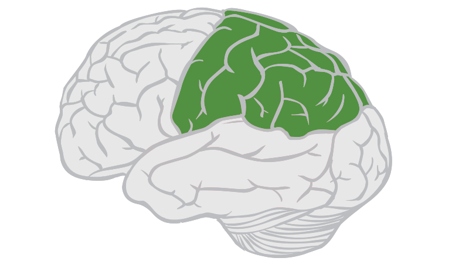
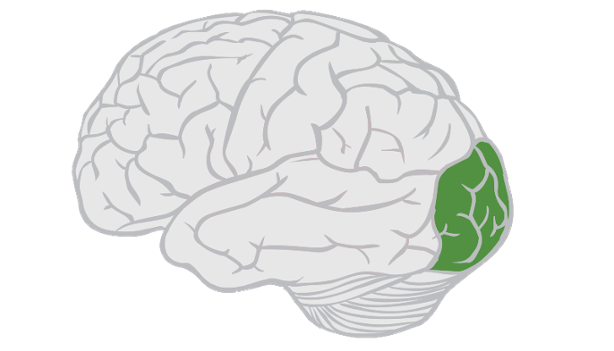
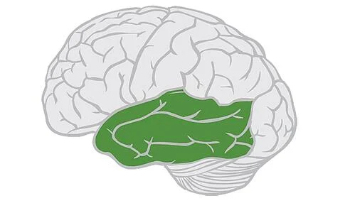

Neuroscience 2022 Extra Credit
What does the Brain even Do?
Website made/designed by Dustin Bousquin
1 / 5
img src
The brain is pretty crazy and miraculous! The brain is also pretty complicated
and hard to understand.
In the following slides you'll find some basic descriptions of the four(4) different main area's
of the cerebrum.
2 / 5

img
src
{kind=link}
This is the frontal Lobe. As the name implies, it's right in the front of your
brain! The frontal lobe
is incredibly important, and does so many things! Some of the most important things it does is;
help control voluntary movement,
used heavily in expressive language, and maybe the most important things, executive functioning.
This is a pretty simplified view,
but the frontal lobe is incredibly important in controlling all kinds of functioning! This area
of the brain is also the last to fully develop.
3 / 5

img
src
{kind=link}
This is the parietal lobe. The parietal lobe is mainly used in processing sensory
information it recieves
from the outside world. Things like touch, taste, temperature, etc. are all connected to this
lobe, as well as lesser sensory
functioning like weight, shape, size, etc.
4 / 5

img src
{kind=link}
This is the Occipital lobe. As you can see above, it's located directly in the
back of the brain.
The occipital lobe is mainly associated with vision. This could be visual perception, colors,
forms, shapes, and even tracking motion.
5 / 5

img
src
{kind=link}
This is the temporal love. This is a pretty important part of the brain, and the
second largest lobe in the brain!
it's mainly responsible for auditory information, as well as very heavily involved in the
process of preserving both long term and current memories.
Please use the above buttons to navigate the Slides!